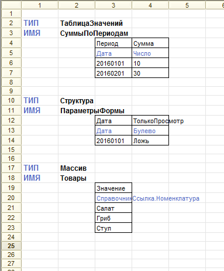
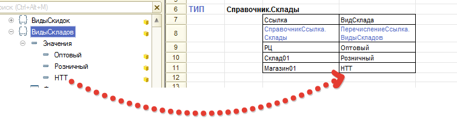
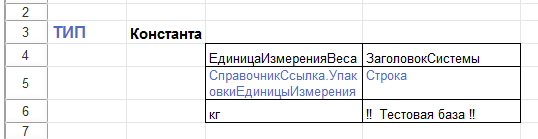
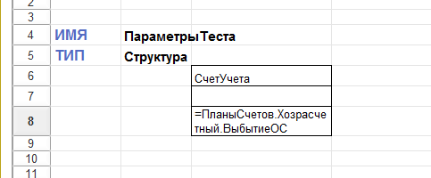
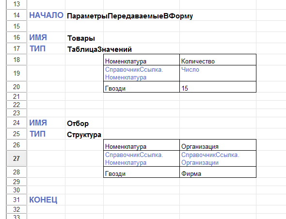
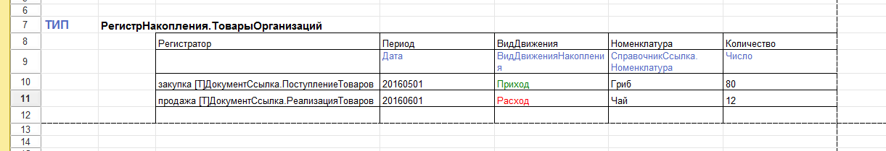
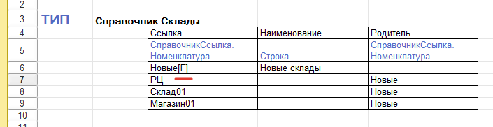
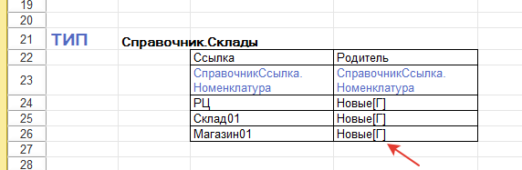

Данная обработка является инструментом для разработки через тестирование. Она предназначена для генерации тестовых данных перед выполнением тестов. По назначению она является альтернативой аналогичной библиотеки из проекта xUnitFor1C, однако формат описания данных принципиально другой.
Обработка является библиотекой, имеющей основной экспортный метод СоздатьДанныеПоТабличномуДокументу(МакетОписанияДанных). Может применяться в любой конфигурации. Не зависит от сторонних библиотек.
Принцип работы.
В табличном макете описывается коллекция, которую необходимо получить. Обработка заполняет описанную коллекцию и попутно генерирует для нее данные. Возвращает структуру коллекций. Можно не возвращать коллекции, а только генерировать данные.
Типы возвращаемых коллекций: Таблица значений, Массив, Структура, Структура коллекций (любого уровня вложенности).
Данные генерируются по принципу “если не находим - создаем” с режимом ОбменДанными.Загрузка = Истина. Данные удобно описывать прямо в конфигураторе без переключения в пользовательский режим.
Типы данных, которые генерируются/подставляются в коллекции:
Формат описания данных
Макет с данными может содержать несколько наборов данных. Каждый набор данных содержит заголовок и табличное описание коллекции.
Наборы данных располагаются друг под другом
Генерация возвращаемых коллекций

В заголовке набора данных можно указывать один из следующих типов коллекции: ТаблицаЗначений, Массив, Структура.
ИМЯ в заголовке набора данных является ключом в возвращаемой структуре коллекций
Описание коллекции начинается в следующей строке после заголовка, начиная с третьей колонки.
В первой строке указывается идентификатор поля в коллекции, во второй строке - тип значений в коллекции, в последующих - элементы коллекции.
В описанном примере будет возвращена структура, имеющая три ключа:
СуммыПоПериодам - таблица значений, имеющая колонку Период с типом Дата и колонку Сумма с типом число
ПараметрыФормы - структура с полями Дата с типом дата и Только просмотр с типом булево
Товары - массив, содержащий ссылки на элементы справочника номенклатура. Причем элементы сгенерируются на лету.
Генерация данных в таблицах БД ссылочного типа
При генерации ссылочных данных обязательно должно присутствовать и быть заполнено поле Ссылка
При генерации данных в таблицах БД ТИП в заголовке описывается как в языке запросов.
Тип полей коллекций описывается как в конфигураторе.
В данном примере в базе будет сгенерирован документ Передача ОС с номером ПерОС-01 от 15 января 2016 года. В этом документе будут добавлены две строки в табличную часть ОС с заполнением полей Основное средство и Стоимость

Чтобы подставить ссылку на перечисление в поле, достаточно указать его идентификатор
Для справочников (и аналогичных с ними объектов) поиск ссылки выполняется:
Для документов (и аналогичных с ними объектов) поиск ссылки выполняется:
Генерация данных в регистрах
В независимых регистрах сведений минимальным требованием является заполнение обязательных полей
В регистрах подчиненных регистраторам обязательно наличие и заполненность поля Регистратор. Остальные поля не обязательны для заполнения, если они не нужны для выполняемого теста, как например, поле Организация в данном примере.
Заполнение констант

Константы заполняются по аналогии со структурами
Подстановка нессылочных типов
Дата заполняется в формате ГГГГММДД или ГГГГММДДЧЧММСС
Числовые значения не должны содержать пробелов. Разделителем является точка.
Стандартный период заполняется в формате ГГГГММДД-ГГГГММДД, где перед разделителем дата начала, а после - дата окончания.
Также поддерживается тип Вид движения накопления со значениями Приход и Расход
Подстановка вычисляемого значения

Для ячейки данных, начинающейся со знака “=” подставляется значение через функцию Вычислить(Выражение), где Выражение - текст из ячейки без первого символа. В описанном примере будет возвращена коллекция-структура ПараметрыТеста, в которой в поле СчетУчета будет ссылка на счет 01.09
Тип у поля может быть не указан, тогда в коллекции будет создано нетипизированное поле. Подставляемые значения могут быть типизированы другим способом, либо могут не содержать описания типа, тогда они будут строками.
Вложенные коллекции

Несколько коллекций можно поместить в структуру. Границами такой структуры-обертки являются ключевые слова НАЧАЛО и КОНЕЦ. В данном примере будет сгенерирована коллекция структура ПараметрыПередаваемыеВФорму, в которой будут поля Товары - таблица значений и Отбор - структура.
Дополнительная информация для созадания в ячейке макета

В некоторых случаях неудобно разделять таблицу на несколько частей, если она содержит составной тип данных. Тогда можно тип подставлять после ключевого сочетания "[Т]" (русская заглавная буква Т в квадратных скобках).

Так можно создать родителя. В данном примере созданная ссылка Новые склады будет группой

Или можно сразу так. Вообще, что создавать: группу или элемент - загрузчик решает при первом упоминании ссылки.
ps
Я сам пользуюсь инструментом чуть меньше года. При этом генерацию данных выполняю исключительно им. Меня он всем устраивает. Поэтому выкладываю его как есть. Возможно, кто-нибудь еще найдет его для себя полезным.
Данная разработка предлагается к использованию в качестве библиотеки, т.е. вызываться из других обработок. Применялась в основном на платфомре 8.3. На 8.2 применялась мало, но при этом работала корректно.